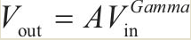

小项目总结
相机标定¶
为什么标定
- 相机拍摄是**三维空间(真实世界)到二维空间(RGB图片)**，本来这个过程不可逆，但是可以通过**标定**找到这个摄像机的数学模型:
二维图像+模型=逆推到三维图像 - 每个相机在组装中可能会出现一些**畸变**，可以通过相机标定校正这种畸变。
相机标定后可以得到什么
- 相机的**内参矩阵A(dx,dy,r,u,v,f),外参矩阵[R] [T],畸变系数[k1,k2,k3,
~,p1,p2,~]**- 内参矩阵参数介绍
- 一个像素的物理尺寸
(dx,dy) - 焦距
f - 图像物理坐标的扭曲因子
r - 图像原点相对于光心成像点的的纵横偏移量
u和v（像素为单位）
- 一个像素的物理尺寸
- 外参矩阵参数介绍
- 世界坐标系转换到相机坐标系的
旋转R矩阵 - 世界坐标系转换到相机坐标系的
平移T矩阵
- 世界坐标系转换到相机坐标系的
- 畸变系数参数介绍
- 相机的径向畸变系数
k1,k2,k3,~ - 相机的切向畸变系数
p1,p2,~
- 相机的径向畸变系数
- 内参矩阵参数介绍
如何得到？
- 使用棋盘(黑白方块间隔组成)标定板来采集样本，是真实世界映射到数组图像的对象，二维物体相对于三维物体会缺少一部分信息，于是我们会多次改变棋盘的方位来捕捉图像(不同位置/角度/姿态)，以求获得更丰富的坐标信息，最少3张，10~20张为宜。
- 使用
MatLab的Camera Calibrator工具标定即可。
抖音哈哈镜¶
哈哈镜效果是通过图像坐标变换来模拟真实的哈哈镜效果。具体算法过程如下：
-
输入图像
f(x,y)，宽高分别为Width和Height，设置图像中心坐标Center（cx,xy）为缩放中心点，图像上任意一点到中心点的相对坐标tx=x-cx,ty=y-cy。 -
哈哈镜效果分为**图像拉伸放大和图像缩小**。
-
对于图像拉伸放大，设置图像变换的半径为
radius，哈哈镜变换后的图像为p(x,y)。-
x=(tx/2)×(sqrt(tx×tx+ty×ty)/radius)+cx -
y=(ty/2)×(sqrt(tx×tx+ty×ty)/radius)+cy
-
-
对于图像缩小，设置图像变换的半径为
radius，哈哈镜变换后的图像为p(x,y)。x=cos(atan2(ty,tx))×12×(sqrt(tx×tx+ty×ty)+cxy=sin(atan2(ty,tx))×12×(sqrt(tx×tx+ty×ty)+cy
-
import numpy as np
import cv2
import math
# 抖音哈哈镜，拉伸放大
def MaxFrame(frame,radius=400):
height, width = frame.shape[:2]
center_X,center_Y = width / 2,height / 2
newX,newY = 0,0
real_radius =int(radius / 2.0)
new_data = frame.copy()
for i in range(width):
for j in range(height):
tX = i - center_X
tY = j - center_Y
distance = tX * tX + tY * tY
if distance < radius * radius:
newX = int(tX/ 2.0)
newY = int(tY/ 2.0)
newX = int(newX * (math.sqrt(distance) / real_radius))
newX = int(newX * (math.sqrt(distance)/ real_radius))
newX = int(newX + center_X)
newY = int(newY + center_Y)
if newX<width and newY<height:
new_data[j, i,:] = frame[newY, newX,:]
return new_data
# 抖音哈哈镜，挤压缩小
def MinFrame(frame):
height, width = frame.shape[:2]
center_X,center_Y = width / 2,height / 2
newX,newY = 0,0
new_data = frame.copy()
for i in range(width):
for j in range(height):
tX = i - center_X
tY = j - center_Y
theta = math.atan2(tY, tX)
radius = math.sqrt((tX * tX) + (tY * tY))
newR = math.sqrt(radius) *12
newX = int(center_X + (newR * math.cos(theta)))
newY = int(center_Y + (newR * math.sin(theta)))
if newX < 0 or newX >width:
newX = 0
if newY <0 or newY >height:
newY = 0
if newX<=width and newY<=height:
new_data[j, i,:] = frame[newY, newX,:]
return new_data
if __name__ == '__main__':
cap = cv2.VideoCapture(0)
fourcc = cv2.VideoWriter_fourcc(*'XVID')
out = cv2.VideoWriter('output.avi', fourcc, 20.0, (640, 480))
while cap.isOpened():
ret, frame = cap.read()
if not ret:
print("Can't receive frame (stream end?). Exiting ...")
break
# 要加载的函数
result = MinFrame(frame)
result = cv2.flip(result, 1)
out.write(result)
cv2.imshow('result', result)
if cv2.waitKey(1) == ord('q'):
break
# 完成工作后释放所有内容
cap.release()
out.release()
cv2.destroyAllWindows()
照片风格¶
- 照片变老
# RGB三通道公式变换，注意，变换后要约束在0~255之间,np.clip(result,0,255)
R=0.393×r+0.769×g+0.189×b
G=0.349×r+0.686×g+0.168×b
B=0.272×r+0.534×g+0.131×b
-
图片转素描(PS实现)
- 灰度化，将彩色图片转换成灰度图像。
- 复制灰度图层，并且反色，反色为Y(i,j)=255-X(i,j)。
- 对灰度图像进行高斯模糊。
- 模糊后的图像叠加模式选择颜色减淡效果公式:
C=MIN(A+（A×B）/（255-B）,255)- C为混合结果
- A为去灰度图
- B为高斯模糊后的像素点
- 也可以直接叠加两张图片(cv2.addWeighted)。
-
图片转油画
- 相邻三行的图像对其像素进行打乱
- 增强图像的色彩空间(
PIL里面有个ImageEnhance模块，专门用作图像增强处理)，例如调节色度。
# 1.像素随机打乱，这里使用3行，如果更粗糙就用更多行 def oil_style(img): height, width = img.shape[:2] output = np.zeros((height-2, width,n), dtype='uint8') for i in range(1,height-2): for j in range(width-2): if random.randint(1,10) % 3==0: output[i, j] = img[i+1,j] elif random.randint(1,10) % 2==0: output[i, j] = img[i + 2, j] else: output[i, j] = img[i - 1, j] return output # 2.图像增强 def color_add(): image = Image.open('oil_img.jpg') enh_col = ImageEnhance.Color(image) color = 2.0 image_colored = enh_col.enhance(color) image_colored.show() -
马赛克
- 讲图像分成大小一致的图像块，每个图像块都是正方形(该尺寸决定了马赛克块的大小)，所以马赛克对每个正方形的处理有下面几种方式:
- 模板中对应的所有图像的像素值都等于该模板的左上角第一个像素的像素值。
- 对于方块里的像素进行随机打乱。
- 随机用某一点代替领域类的所有像素
row, col, channel = img.shape half_patch =10 # 马赛克大小 # 类似滑窗一样，遍历整张图片，随机在图像的Patch领域里取一个像素来替换Patch里面的所有像素值 for i in range(half_patch, row-1-half_patch, half_patch): for j in range (half_patch, col-1-half_patch, half_patch): k1 = random.random() - 0.5 k2 = random.random() - 0.5 m=np.floor(k1*(half_patch*2 + 1)) n=np.floor(k2*(half_patch*2 + 1)) h=int((i+m) % row) w=int((j+n) % col) img_out[i-half_patch:i+half_patch, j-half_patch:j+half_patch, :] =\ img[h, w, :] - 讲图像分成大小一致的图像块，每个图像块都是正方形(该尺寸决定了马赛克块的大小)，所以马赛克对每个正方形的处理有下面几种方式:
-
漫画风格
-
灰度化+中值滤波(降低图片的准确度,增加绘画中的误差)
-
图像阈值化(分离灰度图像中的目标区域和背景区域)
dst = cv2.adaptiveThreshold(src, maxval, thresh_type, type, Block Size,C)- src：输入图，只能输入单通道图像，通常来说为灰度图。
- maxval：当像素值超过了阈值（或者小于阈值，根据type来决定所赋予的值。）
- thresh_type：阈值的计算方法包含两种类型，即cv2.ADAPTIVE_THRESH_MEAN_C和cv2.ADAPTIVE_THRESH_GAUSSIAN_C。
- type：二值化操作的类型与固定阈值函数相同，包含5种类型，即cv2.THRESH_BINARY、cv2.THRESH_BINARY_INV、cv2.THRESH_TRUNC、cv2.THRESH_TOZERO和cv2.THRESH_TOZERO_INV。
- Block Size：图片中分块的大小。
- C：阈值计算方法中的常数项
-
img_gray = cv2.cvtColor(img_rgb, cv2.COLOR_RGB2GRAY)
img_blur = cv2.medianBlur(img_gray, 7)
#检测到边缘并且增强其效果
img_edge = cv2.adaptiveThreshold(img_blur,255,
cv2.ADAPTIVE_THRESH_MEAN_C,
cv2.THRESH_BINARY,
blockSize=9,
C=2)
#转换回彩色图像
img_edge = cv2.cvtColor(img_edge, cv2.COLOR_GRAY2RGB)
img_cartoon = cv2.bitwise_and(img_color, img_edge)
抖音特效¶
-
抖音抖动特效
- 抖动效果的原理就是**对视频中的一些帧进行剪切和放大到原图**，出现视频中的人像放大颤动的效果。具体的步骤如下：读取待处理的视频，设置出现抖动效果的帧数，比如相邻5帧的图像按照图像中心进行裁剪，然后缩放到原来的尺寸。设置抖动中不变的帧数，比如以5帧为间隔来处理图像。
def img_shake(img): height,width,n=img.shape h1=int(height*0.1) h2=int(height*0.9) w1 = int(width * 0.1) w2 = int(width * 0.9) img2=img[h1:h2,w1:w2] dst = cv2.resize(img2, (width, height)) return dst # main 每隔5帧处理一下即可 -
抖音闪白效果
-
类似抖动，每隔5帧进行
Gamma变换(对图像灰度值进行非线性操作,公式下)，主要是调节图像的曝光程度。
Gamma变换:让图像从曝光强度的线性响应变得更接近人眼感受的响应，即将相机曝光或曝光不足的图片进行矫正Gamma值大于1时，对图像的灰度分布直方图具有拉伸作用，使灰度向高灰度值延展- 而当
Gamma小于1时，对图像的灰度分布直方图具有收缩作用，使灰度向低灰度值方向靠拢。 - 因此设置Gamma参数可以控制图像的曝光度，在0～1时会造成图像过度曝光
-
def gamma_trans(img,gamma):#gamma函数处理
gamma_table=[np.power(x/255.0,gamma)*255.0 for x in range(256)]#建立映射表
gamma_table=np.round(np.array(gamma_table)).astype(np.uint8)#颜色值为整数
return cv2.LUT(img,gamma_table)#图片颜色查表。另外可以根据光强（颜色）均匀化原则设计自适应算法。
- 抖音视频霓虹效果
- 方法一：实时的光斑绘制(opencv上显得突兀，openGL上可以)，这种方法弃用。
- 方法二：设计多幅素材图片，黑底上面有亮色的光斑，不同的图片中光斑的位置不同。
- 加载视频，按照1帧为一个间隔，每个间隔中的图片在相同位置绘制彩色光斑，一共定义4种光斑位置，循环在视频中进行渲染，最后将处理完的视频保存并输出。
def neon(img,cnt):
h,w = img.shape[:2]
if cnt==1:
mask = cv2.imread("mask1.jpg") # 可以设计四张图片，cnt不同，加载不同
......
mask = cv2.resize(mask,(w,h),interpolation=cv2.INTER_CUBIC)
dst = cv2.addWeighted(img,0.7,mask,0.3,0)
return dst
- 抖音时光倒流
- 帧图片倒叙存储即可
- 抖音视频慢动作
- 读取视频，对视频计数，当计数到第20～40帧的时候，设置降低的fps_slow=10，也就是每秒10帧视频图像，并保存到另外一个视频中，因此原视频被分成了3个视频，即第0～20帧、第20～40帧、第40之后，将3个视频组合起来
美颜效果¶
- 人脸磨皮
- 图像滤波
- 滤波是消除脸部的一些细纹和斑点，但是会变模糊，为了保留更多的边缘信息，使用双边滤波
- 图像融合
- 改善模糊现象，
0.3*src+0.7*blur，即使用cv2.addWeighted函数
- 改善模糊现象，
- 图像锐化
- 增强细节感，使用
USM锐化或邻域锐化和Laplace锐化，本节采用Python中PIL模块的ImageEnhance类中的ImageEnhance.Sharpness()等函数，通过输入的参数自动调节图像的锐度和对比度。
- 增强细节感，使用
- 图像滤波
import cv2
from PIL import Image
from PIL import ImageEnhance
img = cv2.imread('3.jpg')
blur = cv2.bilateralFilter(img,9,75,75)
alpha = 0.3
beta = 1-alpha
gamma = 0
img_add = cv2.addWeighted(img, alpha, blur, beta, gamma)
cv2.imwirte('img_add.jpg', img_add)
# # 锐度增强
img_add = Image.open('img_add.jpg')
img_add.show()
enh_sha = ImageEnhance.Sharpness(img_add)
sharpness = 1.5
image_sharped = enh_sha.enhance(sharpness)
image_sharped.show()
# # 对比度增强
enh_con = ImageEnhance.Contrast(image_sharped)
contrast = 1.15
image_contrasted = enh_con.enhance(contrast)
image_contrasted.show()
cv2.waitKey(0)
- 人脸美白
- 最好的实现方式是简历一个颜色查找表，比如从245开始，图像的像素值为255，因此建立一个查找表，共包含256个元素，每一个元素对应一个0～255像素值调整后的像素，一般是对原本的像素值增加，通过查找表来改变图像的像素值即可。当然，具体的效果需要不断的测试，改变颜色查找表。
import cv2
import math
from PIL import Image
from PIL import ImageEnhance
Color_list = [
1, 2, 4, 6, 8, 10, 12, 14, 16, 18, 20, 22, 24, 26, 28, 30, 31, 33, 35, 37, 39,
41, 43, 44, 46, 48, 50, 52, 53, 55, 57, 59, 60, 62, 64, 66, 67, 69, 71, 73, 74,
76, 78, 79, 81, 83, 84, 86, 87, 89, 91, 92, 94, 95, 97, 99, 100, 102, 103, 105,
106, 108, 109, 111, 112, 114, 115, 117, 118, 120, 121, 123, 124, 126, 127, 128,
130, 131, 133, 134, 135, 137, 138, 139, 141, 142, 143, 145, 146, 147, 149, 150,
151, 153, 154, 155, 156, 158, 159, 160, 161, 162, 164, 165, 166, 167, 168, 170,
171, 172, 173, 174, 175, 176, 178, 179, 180, 181, 182, 183, 184, 185, 186, 187,
188, 189, 190, 191, 192, 193, 194, 195, 196, 197, 198, 199, 200, 201, 202, 203,
204, 205, 205, 206, 207, 208, 209, 210, 211, 211, 212, 213, 214, 215, 215, 216,
217, 218, 219, 219, 220, 221, 222, 222, 223, 224, 224, 225, 226, 226, 227, 228,
228, 229, 230, 230, 231, 232, 232, 233, 233, 234, 235, 235, 236, 236, 237, 237,
238, 238, 239, 239, 240, 240, 241, 241, 242, 242, 243, 243, 244, 244, 244, 245,
245, 246, 246, 246, 247, 247, 248, 248, 248, 249, 249, 249, 250, 250, 250, 250,
251, 251, 251, 251, 252, 252, 252, 252, 253, 253, 253, 253, 253, 254, 254, 254,
254, 254, 254, 254, 255, 255, 255, 255, 255, 255, 255, 255, 255, 255, 255, 255,
255, 255, 255, 256]
def main():
img = cv2.imread("3.jpg")
img = cv2.bilateralFilter(img, 9, 75, 75)
height,width,n = img.shape
img2 = img.copy()
# img2 = cv2.cvtColor(img, cv2.COLOR_BGR2HSV)
for i in range(height):
for j in range(width):
B=img2[i, j][0]
G=img2[i, j][1]
R=img2[i, j][2]
img2[i, j][0] = Color_list[B]
img2[i, j][1] = Color_list[G]
img2[i, j][2] = Color_list[R]
# img2[i, j][1] += 2
# img2 = cv2.cvtColor(img2, cv2.COLOR_HSV2BGR)
cv2.imwrite('res.jpg',img2)
# 锐化，让结果更真实
image = Image.open('res.jpg')
enh_con = ImageEnhance.Color(image)
contrast = 1.2
image_contrasted = enh_con.enhance(contrast)
enh_con = ImageEnhance.Contrast(image)
sharpness = 1.2
image_contrasted = enh_con.enhance(sharpness)
image_contrasted.show()
if __name__ == '__main__':
main()